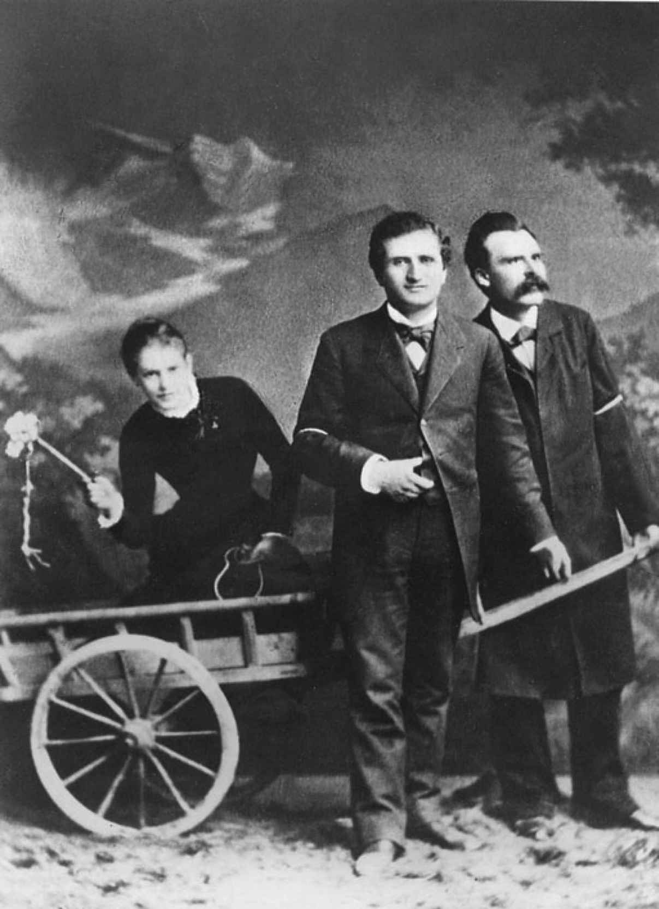
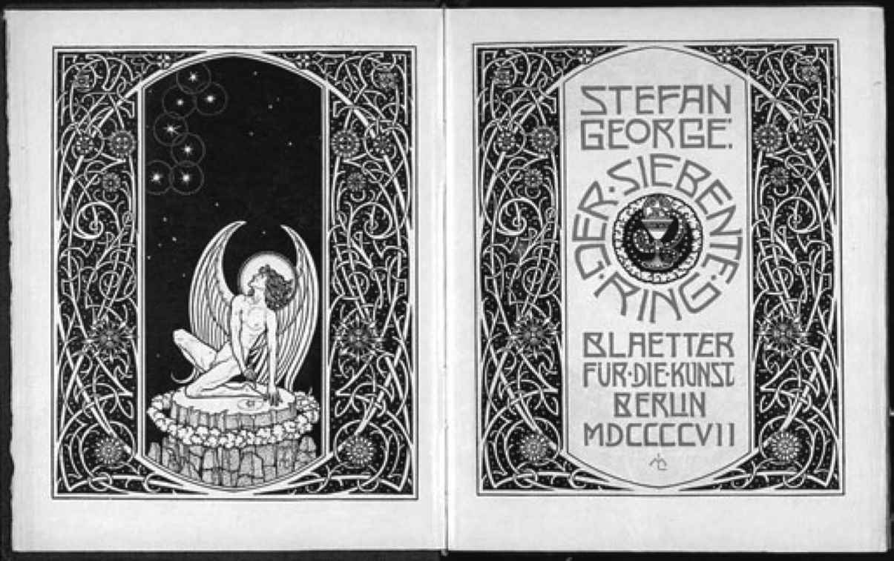
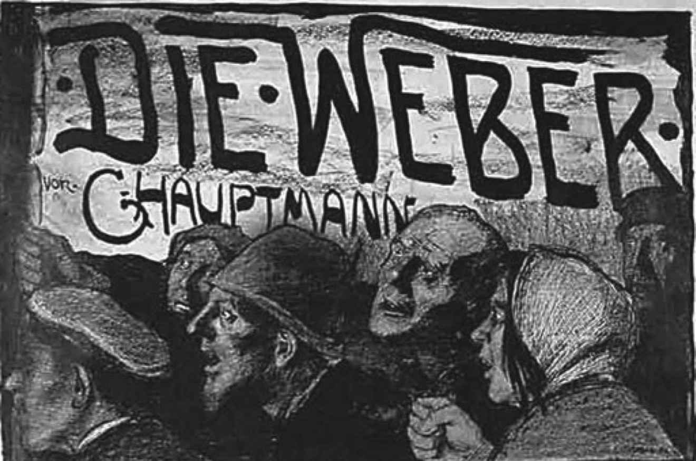

“要说德国‘教化’和文化的成功，只是在混淆概念，”尼采在普法战争和俾斯麦帝国宣告成立后的民族主义狂热高峰时期写道，“混淆是基于在德国纯粹的文化观念已经丧失这一事实。”在军事胜利中他更多地看到了“德国精神为了有利于德意志帝国而失败，甚至是灭绝”的可能性。对尼采来说，“文化”要求的是“一个民族生活中所有表现的艺术风格的统一”，他认为德国文化不和谐得令人绝望，虽然他不承认这种不和谐是源于强行把商业上成功的文学和新兴资产阶级的物质论哲学与旧官僚的精英主义和理想主义遗产相结合。尼采最尖刻（即便不是最后）地表达了德国文化官员们的仇恨，他们正在被资本崛起的力量所欺骗（“仇恨”这个词是他后来为定义历史的失败者对征服者的情感复仇而创造的术语）。《反基督者》（1888，1895年出版）是他陷入无法治愈的疯狂之前所写的最后几部作品之一，在其设想的理想社会中，统治阶级是知识分子，“精神之人”甚至凌驾于国王和军队之上。尼采无与伦比的破坏和自我破坏的批评力量指向一切力图调和引导德国取得新成就的原则（决定论科学、大规模生产、竞争性的经济个人主义）与作为旧德国文化基石的世俗化神学的尝试。有时他以新的名义批评旧的—开明的理性主义、人道主义，尤其是更为公开的宗教残余。有时他又从旧的（现已被剥夺名号的）精英立场出发，批评新的—平等主义、社会主义、女权主义和反犹主义。将思想从一切真实的社会客体或背景中分离出来，是他写作的目的，也是他孤独、流浪的生活方式的目的。对于每一个看上去可能体现了自己所代表的思想的当代人，他往往采用重新定义自我的暴力方式与其拉开距离：施特劳斯之所以被尼采敌视是因为他比尼采更有效地批判了宗教；叔本华的形而上学是《悲剧的诞生》的基础；瓦格纳的音乐剧在此书中被奉为现代文化的顶峰，后又因为剧中的伦理观里暗藏的基督教因素而遭他唾弃。尼采没有能力规划一本书，甚至是一篇散文长度的论证。他的一部巨著，《圣经》的仿作《查拉图斯特拉如是说》（1883—1885），与同时代人的作品存在同样的毛病：风格的不真实性。但是在格言集和短小的反思集［最好的应该是《人性的，太人性的》（1878—1880）和《善恶的彼岸》（1886）］中，尼采可以不受任何连贯性要求的束缚，大放光彩，因此成为20世纪最具多样性和颠覆性的、成果丰硕的思想家之一：
1885年，帝国赢得了它最伟大的胜利之一，尼采曾向其宣告过知识分子的战争。歌德孙辈的最后一人去世后，他的遗作向公众开放，魏玛再一次成为歌德和席勒之城。以魏玛为中心的歌德学会迅速影响了德国和全世界。诗人的住房变成博物馆，他们的文献被转移到专门建立的档案馆中，教授及其助手们立即开始编辑歌德全集的历史评注版，最终达到150卷本，直到1919年才完工。一边是歌德及同期的“古典主义者们”的作品，另一边是编辑这一切的学术官僚体系的成果，两者成为德国民族文学的双重支柱，成为“受教育的市民阶层”和把这个奇怪阶层团结起来的新政治国家的共同财富和种族图腾。它们彼此赞扬、诅咒或相互对抗，在所有后来的德国形态中保持这样的状态直到今天。即使制度化进程已经开始，尼采仍然指出了它所依据的错误前提：根据1867年的定义，“古典主义者”是民族文化的发现者和建造者，但事实上他们是某种文化的寻找者，并且没有找到。然而在1896年，尼采的妹妹把她已经成名却在慢慢走向死亡的哥哥连同他的所有文献搬到魏玛；1953年，这一位“古典作家”的文学遗产最终也被藏入歌德—席勒档案馆。

图12 尼采（右）和他的朋友保罗·雷，他们在争夺露·安德烈亚斯—莎乐美（左，持鞭者）的芳心，后来她与西格蒙德·弗洛伊德和诗人里尔克都有交往。这张照片是尼采在1882年组织拍摄的，他题名为《圣三一》
尼采对俾斯麦帝国杂合文化的反感首先在慕尼黑找到了共鸣，慕尼黑是帝国最大、最犹豫不决的新成员的首府。巴伐利亚国王不仅赞助了瓦格纳，也赞助了一群二流作家和诗人，他们认为自己在一个敌对的时代保持着审美观念论的精神—出身资产阶级的富有的男人们，没有勇气接受适合他们阶级的物质论，反而感谢德国官僚们给他们提供了艺术避难所。他们之中有后来的诺贝尔文学奖得主保罗·海泽（1830—1914），他的一个想法比他的一百多部虚构作品贡献更大。他凭借文集《德国故事宝库》（1871）及其理论思考创造了一种文学概念，它具有必要的多元性，可以同时容纳第二帝国文化生活中的商业派和学术派。“传奇故事”是一个使用了很久的指代散文体短篇故事的术语，对这种体裁的特征已经有了不少思考（比如来自蒂克的）。但是海泽所创造的“传奇故事”是这样一种散文形式：它可以通过刻意封闭内部的结构和象征符号的连贯性，把在欧洲迅速兴起并反映大众读者生活和兴趣的现实主义自由叙事置于德国“艺术”概念的控制之下。如果说18世纪晚期的诗体戏剧是变身成书本的精英文化，那么19世纪晚期的“传奇故事”就是变身成精英文化的书本。其中最在行的作家之一，北德抒情诗人（兼国家官员）特奥多尔·施托姆（1817—1888）把“传奇故事”称为“戏剧的姐妹”，他在石勒苏益格–荷尔斯泰因的离群索居是他对抗新秩序的独有方式。
第二帝国期间，慕尼黑一直是在美学上对抗从西里西亚延伸到鲁尔的普鲁士商业和工业强大集团的中心。慕尼黑地处南方，信仰天主教，穿越阿尔卑斯山脉可直达地中海国家；另外还享有双重的福分：丧失大部分功能的君主政体乐于为艺术和音乐修堂盖庙，并且去北方碰运气的人腾出了一大堆廉价公寓。这些像磁石一般吸引着作家、画家、无政府主义者和世俗先知们。在慕尼黑，人们可以坚持幻想，歌德时代的诗人和哲学家们所实现的希腊精神与观念论的结合代表了一个真正的德国，它反对经济和政治的力量，但事实上正是这些力量在推动国家的发展。“慕尼黑是世界上唯一没有‘资产阶级’的城市，”斯特凡·格奥尔格（1868—1933）写道，“比柏林低等官员和妓女的大混杂好上千倍。”莱茵省人格奥尔格依靠从资产阶级的父母那里继承的私人财产生活，原本想成为天主教神父，却在诗歌和男性友谊里找到了自己的信仰。在巴黎遇见魏尔伦和马拉美后，他试图赋予他的德语诗歌法语的品质，甚至（通过取消大写字母）模仿法语。格奥尔格频繁地从一个熟人家搬到另一个熟人家，试图培养难以捉摸的特性，但是在19世纪90年代，他在慕尼黑定居了一段时间，人们看到他大步“穿越”咖啡馆的样子好似主教跨越罗马圣彼得大教堂的中庭。他在内部传阅的杂志《艺术之叶》上发表诗歌，杂志用精心挑选的纸张和彩色油墨印刷，配以新艺术风格的装饰图案和书法，以及印度神秘的万字符。他的诗歌含义深奥，用词精致，韵脚绝对完美。《灵魂之年》（1895）—这个标题借用自荷尔德林，他被格奥尔格和尼采奉为德国诗歌的贵族，却被德国轻视—讲述了在四季轮换中，对女人的爱情失败和对男人爱情的“新冒险”。格奥尔格粗暴地终止了默里克和德罗斯特—
许尔斯霍夫的妥协。在他的诗中，自我并不是那么不可知，而是经常缺席：他的诗一心一意地关注“你”，这个“你”除了对象征性景物的共同体验之外，没有任何自己的特色，象征性景物又更像是一种色情的梦境。诗歌已成为纯粹的权力意志的载体，无视独立人格或物质世界的反对。世纪之交过后，民族主义愈演愈烈，但唯物主义并没有出现失去控制的迹象，格奥尔格的作品采用了更具有预言性和天启性的语调（《第七环》，1907）。他全力建立了一个门徒圈，门徒们仰望他，视他为“主人”，并将在世界上建立一个精神王国。他现在感觉这个世界106的腐败只能通过战争来清洗（《联盟之星》，1914）。

图13 斯特凡·格奥尔格《第七环》（1907）初版的标题对开页，由梅尔希奥·莱希特（1865—1937）设计
如果说在第二帝国，慕尼黑是艺术之都，那么柏林就是现实之都。在迅速膨胀的柏林，德国终于拥有了大都市和现实主义文学的背景和机会，足以媲美19世纪的巴黎、伦敦或圣彼得堡。在特奥多尔·冯塔纳（1810—1889）的现代性中没有任何犹豫不决或不通人情世故的天真，他是一位职业记者兼诗人，在英国和法国居住了一段时间后，定居于柏林，在生命的最后20年写出了14部关于新普鲁士的小说。在19世纪80年代，冯塔纳从历史题材前进到自己时代的生活。他风格成熟后的第一部杰作《混乱与迷惘》（1888）简洁得可以被归为传奇故事，其中囊括了大量平和的主题，情节主要由貌似偶然实则严密的谈话推进，让人联想起当时年轻得多的亨利·詹姆斯的写作方式。如果说它的中心主题—贵族男士博托和下层中产阶级女子莱妮之间注定悲剧的爱情—似乎回到18世纪中期的文学，回到《阴谋与爱情》和狂飙突进，那么这就显示了冯塔纳成就的历史意义。作为决然的亲英派，他再次发掘了早先失败的革命者们的雄心，并且正在实现这个雄心：创造与英国当代社会小说匹敌的德国版本。在莱妮和博托快乐相处的旅馆房间的墙上挂着两幅画，莱妮看不懂上面的英文题字—除此之外她很喜欢这些画，这种能力的欠缺象征着分开这对情人的阶级差异以及维持这一差异的政治压迫，这两幅画标志着抵抗专制的盎格鲁—撒克逊传统：《华盛顿横渡特拉华河》和《在特拉法尔加的最后一小时》。在冯塔纳的小说《燕妮·特赖贝尔夫人》（1893）中，英国和来访者尼尔森先生身上体现出的对特拉法尔加的回忆也表现了德国的内部矛盾，该书致力于凸显“受教育的市民”的两种形式—资产阶级和学者之间的可笑差异。不过，冯塔纳不仅仅是讽刺作家，还是一位具有深刻政治和历史现实感的道德家。他不满足于仅仅批判他所处的社会：他必须借助对它的表现来反思对与错以及人类目标之类的终极问题。1892年，他开始创作一系列小说，达到的某些成就在德语文学中几乎没有先例：表现独立、负责、没有政治压迫的生活，就像人类生活可能成为的那个样子，因为这样的生活属于统治阶级的成员。在《无可挽回》（1892）、《艾菲·布里斯特》（1895）和《施泰希林》（1898）中，冯塔纳完成了18世纪的前辈们无法做到的事。他以文学现实主义的素材来描绘一个独立的阶层：普鲁士的地主贵族。为了他们，俾斯麦建立了他的帝国，并指控是他们抑制了德国资产阶级的政治野心。
但是，冯塔纳笔下的角色们不得不面对意义和良知、行为和后果的质问，以及时间的流逝。这些超越了他们所处的历史环境，而且他们明白这一点。《艾菲·布里斯特》尤其以紧张的心理和象征结构见长。它不仅讲述了年长的丈夫雄心勃勃地攀上俾斯麦一个部门的晋升阶梯，活泼的女主角在与他无爱的婚姻中陷入通奸，而且表明了几年后通奸事件被意外发现的后果。艾菲的丈夫冯·殷士台顿受自己所属阶层荣誉法典的驱使，在决斗中杀死了他的情敌，并与妻子离婚，迫使她与唯一的女儿分离，由此摧毁了四条生命，包括他自己的。为什么要这么做？他不知道，我们也不知道。他有残忍的倾向吗？他是否正好缺少故事的讲述者或艾菲忠实的天主教女仆，甚至是她的狗所拥有的人类的同情心？还是说，他是自己无法掌控的命运的受害者，它像社会存在一样无法避免，但也像看似偶然一样随意—我们正好生活在某一个时代而不是别的时代？“你是对的！”殷士台顿所信赖的朋友说，“世界就是这样，事情不会像我们期待的那样发生，而是以他人期待的方式发生……我们对荣誉的崇拜是偶像崇拜，但是只要人们还相信这偶像，我们就必须服从。”因为冯·殷士台顿属于有权力的阶层，他和其他角色们认为不得不服从的强制力在我们看来，其形式可能会随着权力的再分配而改变，但它本身不会被铲除。他们不会沉溺于对它的服从，他们的人性价值依赖于履行义务的精神，这些义务是易逝却不可避免的时间和地点强加给他们的。因此他们似乎是叙述者机智而低调的同情和讽刺的合适对象。冯塔纳对他三部最伟大的小说所描写的阶层谙熟于胸，但他本人并不属于它。因此他的现实主义总是暗示了不同于他的主人公的另一个角度，暗示了历史的确定性：总有一天这场有名无实的盛会将消失，另一座圣殿里的另一个偶像将要求我们臣服。“我们的古老家庭都是这个思想的受害者：‘地球没了它们就不转。’这是相当错误的，”冯塔纳最后一部小说《施泰希林》中的一位深思熟虑者如此说道，“无论看向何方，我们都在一个充满民主态度的世界里。一个新的时代即将降临。”
在新的世纪，老旧的普鲁士家庭连同普鲁士本身确实消失了。柏林年轻一代的作家在技术和工业时代已然无足轻重。文学需要聚焦的不是占有土地的阶级，而是占有金钱的阶级及其从中榨取金钱的阶级，即产业工人新阶级。19世纪八九十年代，由阿诺·霍尔茨（1863—1929）和约翰内斯·施拉夫（1862—1944）领头的自然主义运动在一定程度上是对左拉和易卜生作品的热烈回应，但同样也是对激进的资产阶级现实主义这一德国本土传统的恢复。它在18世纪中期露出苗头，接着出现在毕希纳的作品中（他的《沃伊采克》于1878年首版，标题被错抄成“Wozzeck” [15] ）。在这个意义上，自然主义运动与冯塔纳有着近似的目标，后者对它的一些作品做出了积极的评价。为一名职业小说家提供生活保障的财富也在戏剧方面产生了类似的影响，特别是因为德国王室继续维持对剧院的广泛资助。审查制度或许很严格，可是在财富中心柏林这是可以回避的。剧院经理奥托·布拉姆（1856—1912）组建了一家私人（所以是未经审核的）剧院俱乐部，1889年上演的第一部剧易卜生的《群鬼》遭遇禁演，因为剧中讨论了梅毒；第二部剧更加令人震惊：格哈特·豪普特曼（1862—1946）的第一部成熟之作《日出之前》，主题是遗传性酗酒（优生学时代的典型幻想）。西里西亚人豪普特曼最初由他的妻子资助，在柏林开始写作生涯，和海涅一样对现代主义抱有矛盾的态度，并将之引入文学：在一首描绘夜间火车旅行的早期诗歌中，车厢外月光笼罩下的风景引起了他的遐想，但一想到为了他的舒适而去修建铁路的贫穷且愤怒的工人们，他的遐思戛然而止。赋予他灵感的不是理论，而是慷慨的同情心，他很乐意暂时被霍尔茨和施拉夫称为自然主义者，但是不久之后他展露出多样天赋中更主观的一面。
在《日出之前》中被酗酒毁灭的一家人正是俾斯麦德国的一个写照：西里西亚农民凭借矿业资产一夜之间转变成了工业资本家。一位记者闯进他们粗野原始的环境，他满腹当代的物质论和决定论思想，似乎给这家里喜欢读《少年维特的烦恼》的女儿提供了逃离的希望。但是作为一个优秀的达尔文主义者，他因为害怕这个家庭所谓的遗传污点，无法强迫自己与她结婚，于是她像维特一样自杀了。意志薄弱的知识分子是为18世纪文学做出重大贡献的疑心重重的神学家的直系后裔，他们是豪普特曼当代背景的作品中反复出现的形象。这类形象体现了豪普特曼的犹豫，他不愿跟随冯塔纳把他的现实主义扩展到作为政治权力中心的阶级身上：如果在所展现的世界中，人们没有自由行动的权利，那么被动地接受必要之事可以被视为对痛苦的恰当回应。
这样一个短视的辩护者甚至改头换面出现在豪普特曼的杰作《织工》（1892）中。《织工》是青年歌德、伦茨和毕希纳所开创的风格的一次胜利，剧中有众多情节线索，但没有一个主人公，剧本的生命力来自工人语言的能量（豪普特曼最初用他的家乡方言起草）。它的主题（1844年忍饥挨饿的西里西亚家庭纺织工人为反抗工厂主揭竿而起，遭到军事力量的镇压）导致政府一再试图禁止该剧上演（新皇帝威廉二世出于嫌恶取消了对布拉姆剧院的赞助）。然而，正如冯塔纳在评论中所说，这是一部带有反革命结论的革命戏剧。在最后一幕，一位老年织工作为戏剧的道德中心人物现身，敦促非暴力行为，并在最后时刻被流弹击毙。冯塔纳坦率地指出了此剧与席勒的相似之处。和小说不同，戏剧在德国仍然与王权制的过去牵扯不清，不能很好地反映新社会中的权力现实。豪普特曼复兴的不仅是伦茨时代的现实主义，还有它的自我贬低、向专制主义的臣服，以及向观念论的最终转变。1896年，他的五幕“童话剧”《沉钟》表明他自己依然是月光下顽强的梦想家。1912年他收获了诺贝尔文学奖。

图14 埃米尔·奥尔利克（1870—1932）：1897年《织工》演出的海报
托马斯·曼（1875—1955）在1933年回顾理查德·瓦格纳的职业生涯时，看到了整个德国中产阶级的典型发展过程—从令人失望的1848年革命到俾斯麦帝国里“受权力保护的内在性”的顺从培养：只要提供保护的、专制的和最终是军事的结构没有受到质疑，艺术和文化的内部世界就可以蓬勃发展。曼为自己考虑的显然不会比为瓦格纳考虑的少。第二帝国的中产阶级中很少有作家像他那么典型：他一人融会了资产阶级和知识分子、柏林和慕尼黑。他的家庭是典型的资产阶级家庭：他出生在直到1871年前都是自由城市的吕贝克，是富裕的谷物商人和生在殖民地巴西的德国女子的孩子。1891年他的父亲去世，他依靠继承的钱和后来的文学收入生活：他从没有，哪怕是间接地依赖国家。然而他所有的作品都或多或少地明显受到无私艺术这一概念的主导，这是18和19世纪官僚意识形态的核心，也是“受教育的市民阶层”两翼之间的桥梁。19世纪90年代初期，曼一家紧跟他哥哥亨利希·曼（1871—1950）的脚步搬到慕尼黑，
托马斯开始成为一个厚脸皮的、玩世不恭的短篇故事作家。他在新的环境中回顾他成长的世界，刚满22岁的他开始创作第一部大获成功的小说《布登勃洛克一家》。《布登勃洛克一家—一个家族的覆灭》（1901）是德国对19世纪欧洲描绘资产阶级生活的现实主义小说传统做出的最伟大或许也是唯一的贡献。它的伟大和在欧洲的地位，部分源于它是一部特别的德国作品。它讲述了吕贝克一个商人家庭四代人从1835至1877年的故事，北德的生活背景随之生动铺展：本土建筑、晚宴聚会、语言习惯、北海度假、至今仍部分保留的教室练习、1848年公共事件罕见的短期影响，以及街道照明的出现。结婚、离婚、桃色事件、败家子、流言蜚语、与商业对手之间的社会摩擦、失败的生意及其导致的布登勃洛克公司的衰败，以及家族男性的灭绝，都由此蒙上了特殊的德国色彩。不过，让《布登勃洛克一家》比德国背景下的高尔斯华绥或阿诺德·贝内特更高明的地方是，它有一个只有德国人才能提供的结构特征。为家族生意而牺牲的个人生活的喜剧、悲剧和讽刺剧的背后，存在着对更普遍的原则或命运的暗示。我们似乎被指向尼采对叔本华的批判和他提出的达尔文主义退化论的变种，豪普特曼曾在《日出之前》里粗略地借用过后者。在尼采看来（至少有时候），让叔本华部分逃离可怕的生存斗争的知识分子兼艺术家的洞察力本身就是斗争失败的征兆。随着布登勃洛克家族的衰落，伦理的疑虑、哲学的困惑和艺术的敏感赢得了比求生意志更重要的意义。然而这些对故事的哲学意义或下层结构的暗示产生了双重效果。它们确实开放了应该如何阅读本书的一种可能性：本书显示了人类的生活是无可避免地被决定好的，并且最终是没有意义的。但是通过质问书中角色生活的永恒价值或永恒无价值，它们使得这些生活轨迹不再仅仅是被金钱或社会守旧力量扭曲的人性可悲或可笑的范例：人物及其对自由和意义的追求，即便虚弱无力或注定失败，都获得了意义—或许可以称之为宗教意义，他们所处的环境还没有能力将之表达出来。通过将欧洲资产阶级的小说现实主义与德国官僚传统的哲学内省如此结合起来，托马斯·曼为第二帝国建造了最伟大的文学丰碑。为此要付出一点代价。《布登勃洛克一家》描写的是一个没有普鲁士也没有大学的德国。曼的早期叙事（不同于冯塔纳几乎在同时写就的最后几部作品）向我们展现了没有国家的社会，显示了道德和个人判断的社会和经济源头，但没有指出支撑着小说，尤其是短篇小说的“艺术”和“精神”、“生命”和“意志”的观念的源头。
“生活”和“艺术”、“资产阶级”和“艺术家”之间假定的对立是曼职业生涯下一阶段故事创作的中心，其中特别突出的有《特里斯坦》、《托尼奥·克鲁格尔》（1903）和《魂断威尼斯》（1912）。就“资产阶级”和“艺术家”同属“受教育的市民”而言，两者的对立是不真实的，但是它可以表现为不同的形而上学原则之间真实且深刻的对立，因为曼的写作没有塑造一种把德国社会的异质元素统一起来为新的德国国家服务的“保护性的”统治力量。相反，在这些早期叙事中统一的原则是曼的写作本身。托尼奥·克鲁格尔虽然在慕尼黑成为一名“艺术家”，仍然眷恋着他离开的北德“资产阶级”世界，即使这世界对他充满冷漠和怀疑。“你是迷失了道路的资产阶级者。”一位朋友告诉他。他回答：“如果有什么东西能够把一个写手（即为金钱写作的人）改造成诗人（即为献身艺术写作的人），那就是我这种资产阶级的爱，对人类的、有生命的和平凡之物的爱。”《布登勃洛克一家》是曼从对资产阶级世界充满爱意的表现中创造出的可以被德国的高雅文化传统认定为“艺术”和“诗”的作品，在此之前，资产阶级世界是被排除在外的。只是，他渐渐意识到，还有必要说明高雅文化有赖于与政治权威的合作。随着全球经济的欧洲中心即将面临危机，大众渐渐明白，德国的未来将更多地由政治和军事力量，而不是资产阶级的礼节和平庸决定。曼的中短篇小说里最突出的是他对危机的文学反应，绝大部分非常巧妙，但标志着开始在政治背景下表现德国文化的意愿。“世界上艺术的王国在扩张，健康和纯洁的领土在缩小。”托尼奥·克鲁格尔说。在《魂断威尼斯》里，艺术在各个方面取代了生活。颇负盛名的成熟作家古斯塔夫·冯·阿森巴赫在霍乱肆虐的威尼斯对同住一家旅馆的波兰贵族家庭年少的儿子产生了同性间的痴迷，受其诱惑逗留太久，也被疾病击倒。这看起来像是另一个艺术爱上生活的故事，艺术被动地与生活分离，却对它效忠。但是冯·阿森巴赫的贵族头衔表明他不是克鲁格尔：他是长期服务于普鲁士国家的臣仆的后代。他把自我克制的职业生涯奉献给了艺术，而艺术并非是用来娱乐“资产阶级大众”的“活泼的、智力要求不高的具体描写”，而是如我们被告知的那样，是哲学的、道德主义的、古典化的和高度形式化的。阿森巴赫所臣服的爱并非吸引了托尼奥·克鲁格尔的健康的纯真和无瑕的性爱（与头脑无关），而是已经审美化了的、博学的和明显不“寻常”的爱。阿森巴赫在他的思想中用古典神话和尼采哲学的语言来表达它，但它的真名是死亡—故事中死亡以瘟疫的形式开始渗透威尼斯的运河和广场，预示一切文明秩序的崩塌。1912年，欧洲的死神也正在为即将来临的灾难调兵遣将，其中就有普鲁士的士兵和官僚，他们的民族精神也是阿森巴赫的。以完全感性的，但总是富含象征意义的叙述方式对阿森巴赫展开的讽刺—与那种据说使故事的主人公出名的技巧截然不同—显示出曼可以在文学中表达对德国现实更微妙的理解，远超过我们在他1914年后畅谈祖国动机的那些好战散文中的发现。
山雨欲来风满楼。到20世纪初，有先见之明的作家们可以感觉到国家、集体和个人的身份受到全球工业大众社会发展的威胁。亨利希·曼早在他兄弟之前就认识到民族保护主义只会引向战争，不能代替国际主义，并在自己的小说中讽刺了《布登勃洛克一家》几乎未涉及的德国的国家支柱：《垃圾教授》（1905）里的学院文化和《臣仆》（1914）里的君主制意识形态。在弗兰克·魏德金德（1864—1918）的戏剧中，个人身份被转化为社会角色和性欲之间的交界，魏德金德是一个不稳定的人物，既没有确定的民族根源（他是一个美国公民，“弗兰克”是“本杰明·富兰克林”的简称），也没有稳固的社会地位（在挥霍完一份遗产后，他在慕尼黑为“美极汤料”工作，后又成为小酒店歌舞表演艺术家，直到借助体面的婚姻才能够靠写作生活）。《春之觉醒》（1891）于1906年首次在柏林的布拉姆剧院上演，由马克斯·赖因哈特执导，但由于其中的鞭打、性交、同性接吻和手淫比赛的场景而未能完整演出，直到20世纪60年代才被解禁。该剧断片化的写作风格很大程度上受益于毕希纳。融合了自然主义、讽刺漫画和略显过激的浪漫主义的遣词造句产生了重大影响。在怪诞木偶组成的成人世界和性欲的萌芽被成人惩罚、压制或否定的不成熟的青少年之间，不存在成熟或全面的人格。性欲毕竟先于人格，因此也非常接近破坏它的暴力行为。戏剧两部曲《露露》（1895、1904）为阿尔班·贝尔格 [16] 的第二部歌剧（第一部是《沃伊采克》）提供了标题和素材，主人公露露与其说是受性欲驱使的人，不如说就是性的化身，最终她成为由魏德金德亲自扮演的开膛手杰克的受害者。正如某些军事对峙（如1911年的摩洛哥危机）所显示的，保护了内在世界40年之久的暴力力量正在摆脱束缚。暴力在年轻一代作家的作品中扮演了重要角色，他们在1910年前后创办了很多期刊，如《行动》和《风暴》。在事故中英年早逝的格奥尔格·海姆（1887—1912）写了一首关于森林中一名死亡士兵脸上的蛆虫的诗，这看起来像一个预告片；可是经分解回归大自然的身体，作为柏林医生戈特弗里德·本恩（1886—1956）出版的第一本诗集《停尸房》（1912）的主题，只不过是专业人士日常工作的材料。本恩无法相信个人人格，更不用说人格之间的关系，这在他把与犹太女诗人埃尔泽·拉斯克—许勒（1869—1945）的桃色故事描绘为“黑暗、甜蜜的手淫”时就显示出来了。拉斯克–许勒本人则以不同的基调创作了这一时期最好的几首诗歌。她的诗歌往往有着或温和或古怪的韵律，借用了有限的意象（首饰、星星、花朵、原色、她的犹太传统）来探索对他人、世界和上帝的爱。她也能感觉到尼采式世界末日的接近，但是在她的诗歌《世界的尽头》中看不到任何野蛮或愤世嫉俗的激昂：
一种相似的感觉—即便深陷第二帝国的矛盾和荒诞，人道主义和富有同情心的生活仍然可能存在—贯穿了这一时期最精致的幽默诗歌：克里斯蒂安·摩根斯特恩（1871—1914）的“谵妄之诗”。他的《绞刑架之歌》（1905年及其后的选集）除了标题外并无多少可怕的地方，其中的主要角色是过分敏感的帕尔姆斯特伦教授及其朋友冯·科夫，后者对官僚主义的恐慌缺少切实的体验。在大致位于爱德华·利尔 [17] 和希思·鲁滨逊 [18] 之间某处的领域，他们遇见了“月亮羊”和“鼻行动物”（用许多鼻子来四处行走），并通过阅读后天的报纸或发明可按需倒退的手表来放松。他们模仿中学校长的德语，已死去的隐喻回到有形的生活，帕尔姆斯特伦在“嗅觉风琴”上演奏科夫的《嚏根草奏鸣曲》（装饰以各种抽象的花音），小男人巧妙而愉快地避开了受官僚和知识分子管理的现实的限制：